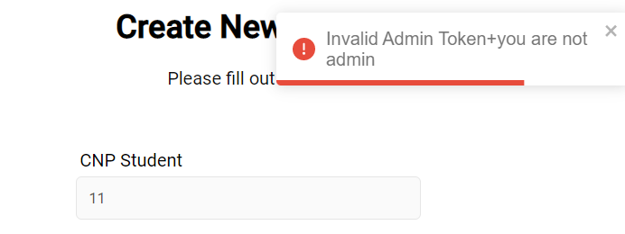

Student:Cirstea Marcu-Eduard
1.Introducere Lucrare
2.Introducere in MERN Stack
3.Limbajul JavaScript si pentru ce este folosit?
4.Autentificare JWT .Parola securizate hash
5.MongoDB -baza de date NOSQL
6.React
7.Redux
7.Aplicabilitate
8.Concluzie
Catalog Online
MERN reprezintă MongoDB, Express, React, Node, după cele patru tehnologii cheie care alcătuiesc stiva.
Server ReactJs -client trimite cerere http catre server
Serverul trimite un raspuns cu informatiile cerute
JavaScript a fost dezvoltat prima dată de către firma Netscape, cu numele de Live Script, un limbaj de script care extindea capacitățile HTML, oferă o alternativă parțială la utilizarea unui număr mare de scripturi CGI pentru prelucrarea informaţiilor din formulare și care adaugă dinamism în paginile web.
Astfel, un pas important spre interactivizare a fost realizat JavaScript, care permite inserarea în paginile web a script-urilor care se executa în cadrul paginii web, mai exact în cadrul browser-ului utilizatorului, usurand astfel și traficul dîntre server și client
JSON Web Token este un standard de internet propus pentru crearea de date cu semnătură opțională și/sau criptare opțională a căror sarcină utilă conține JSON care afirmă un anumit număr de revendicări. Tokenurile sunt semnate fie folosind un secret privat, fie o cheie publică/privată.
Rute care sunt protected care verifica daca utilizatorul are acces verificand tokenul unic al fiecarui user ,cat si daca utilizatorul este un user obisnuit sau admin
MongoDb este o baza de date NoSQL,care reda strucutura bazata pe tabela bazei de date relationale pentru a adapta documentele asemanatoare JSON
MongoDB Atlas este o baza de date in cloud
Framework-ul folosit este mongoose
React este una dintre bibliotecile JavaScript open source ,fiind utilizat pentru construirea de interfete de utilizator interactive
Permite crearea de interfete de utilizator complexe folosind bucati de cod izolate numite componente care se exporteaza intr-un fisier
React a fost dezvoltata de inginerul software ,Jordan Walke ,fiind o aplicatie creata de Facebook
Redux este o biblioteca open-source JavaScript pentru gestionarea de stare a componentelor
O biblioteca JS care ajuta la impartirea aplicatiilor in diferite componente ,dar nu este in masura sa ofere o informatie despre datele ,starea si cum sa fata fata tuturor celorlalte evenimente
React nu se ocupă de modul de gestionare a obiectelor de stat, asigurând singura modalitate de remediere a acestuia prin Redux
Aplicatia poate fi folosita atat pentru administrarea catalogului universitar,cat si pentru administrarea catalogului scolar
Aplicatia este user friendly ,cu rute specifice si securizate , pentru a fi usor accesata de studenti ,cat si de admin
Aceasta poate fi usor modificata pentru diferite functionalitati (cerere bursa,plata restante,cerere adevarinta )
Aplicatie pentru universitati si institutii de invatamant superior cu urmatoarele functionalitati